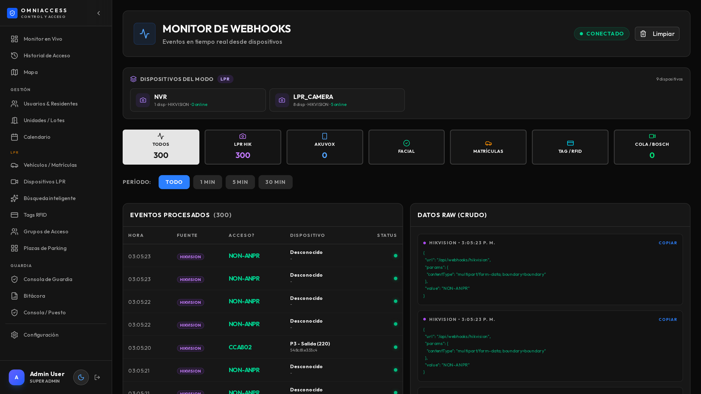
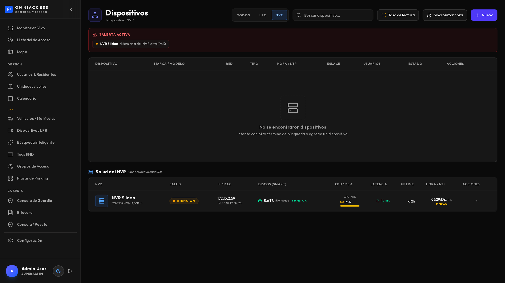
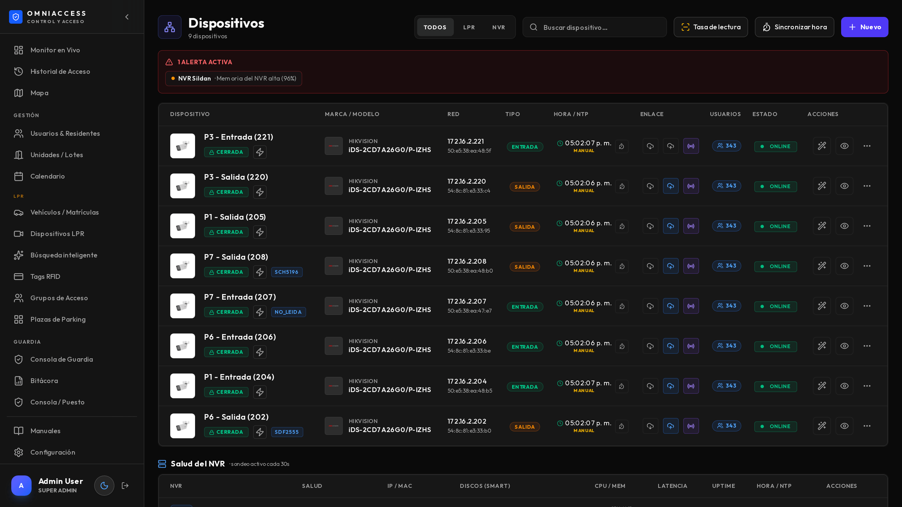

El técnico que instala y mantiene: servidor, cámaras, NVR, calibración y diagnóstico.
OmniAccess LPR es un servidor propio en el predio del cliente, con cámaras ANPR que le reportan por red y un grabador que guarda el video. No depende de la nube: si se corta internet, el control de acceso sigue funcionando.
| Pieza | Función | Notas de instalación |
|---|---|---|
| Servidor OmniAccess | Recibe los eventos, decide el acceso, guarda fotos y sirve el panel | Contenedor o máquina virtual Linux; ver requisitos |
| Cámaras ANPR | Leen la matrícula a bordo y envían el evento por HTTP | Hikvision iDS/DeepinView, Bosch, Akuvox, ONVIF |
| NVR / grabador | Graba 24/7 y sirve la reproducción del instante del acceso | Mapeo de canales por ISAPI |
| Base de datos | Padrón, eventos, configuración | PostgreSQL |
| Almacenamiento de objetos | Fotos y clips, con política de retención por días | MinIO compatible S3 |
| Reenvío de video | Convierte el RTSP de cada cámara al video del panel | go2rtc |
| Tablets de guardia | Registro de visitas, rondas, pánico y posición | Aplicación Android o navegador |
| Barrera / relé | Apertura por matrícula autorizada | Salida de la cámara o módulo de relé |
| OmniAccess | Lo habitual en el mercado | |
|---|---|---|
| Sin internet | Opera completo: lee, decide, graba y avisa por la red local | Se cae con el enlace |
| Multi-marca | Cámaras de distintos fabricantes conviviendo | Una marca por instalación |
| Diagnóstico | Sondeo activo de cada equipo, con alerta antes de que falte un registro | Se descubre el problema buscando un evento que no está |
| Calibración | Asistente de calibración ANPR desde el panel, con vista en vivo | Ir a la interfaz de cada cámara |
| Hora | Detecta desfasaje y lo corrige en un clic | Se descubre cuando los eventos tienen hora rara |
| Retención | Política de días por bucket, desde el panel | El disco se llena y alguien borra a mano |
| Entrega | Manuales, credenciales y checklist de entrega | Un instalador que explica de palabra |
Este manual cubre el modo LPR. Antes de instalar, confirmá con el cliente el modo contratado: LPR, Filas o Face. El modo se elige en Configuración y define qué módulos quedan habilitados.
Este manual es para el técnico que instala y mantiene. Asume que sabés de redes y de cámaras IP; no explica qué es una IP ni cómo se poncha un cable.
En orden de importancia, y por experiencia:
Cámaras LPR (una por acceso, entrada y salida)
│ ISAPI / HTTP
▼
┌───────────────────────┐ ┌──────────────┐
│ Servidor │◄──────►│ NVR / DVR │
│ OmniAccess │ RTSP │ (grabación) │
│ - app web │ └──────────────┘
│ - webhooks │
│ - base de datos │ ┌──────────────┐
│ - almacenamiento │◄──────►│ Tablets │
└───────────────────────┘ WiFi │ de guardia │
│ └──────────────┘
▼
Puesto de monitoreo| Hasta 4 cámaras | 8 a 16 cámaras | |
|---|---|---|
| CPU | 4 núcleos | 8 núcleos |
| Memoria | 8 GB | 16 GB |
| Disco | 250 GB SSD | 500 GB SSD |
| Red | 1 Gb | 1 Gb |
| Sistema | Debian 12/13 o Ubuntu LTS | Igual |
El disco es la variable que más se subestima. Con 8 cámaras y tráfico normal se generan 3 a 4 GB por día de fotos. Calculá el disco contra la retención que va a pedir el cliente.
Es la parte que decide la tasa de lectura. Vale la pena discutirla con el cliente antes de tirar un solo cable.
1. Ángulo. La cámara debe mirar la patente lo más de frente posible. Hasta 30° horizontales y 30° verticales la lectura es buena; más allá cae rápido.
2. Distancia. La patente tiene que ocupar entre 100 y 300 píxeles de ancho en la imagen. En la práctica: entre 4 y 8 metros del punto donde el vehículo se detiene o pasa lento.
3. Un carril por cámara. Una cámara que cubre entrada y salida a la vez lee mal las dos. Si el acceso tiene dos carriles, van dos cámaras.
4. Punto de detención. Lo ideal es leer donde el vehículo va lento o frena: antes de la barrera, no después.
| Situación | Qué hacer |
|---|---|
| Acceso con luz artificial | Verificar que ilumine la patente, no el parabrisas |
| Sin iluminación | Cámara con IR propio, apuntado a la zona de la patente |
| Contraluz (sol de frente) | Reubicar o agregar visera. El WDR ayuda pero no hace milagros |
| Reflejo en patentes nuevas | Bajar la potencia del IR: el exceso satura y "quema" la patente |
Probá de noche antes de dar por terminada la instalación. Una cámara que lee perfecto a las 15 h puede tener 40 % de aciertos a las 3 de la mañana, y es cuando más importa.
El detalle completo está en docs/INSTALL.md del repositorio. Acá va el resumen operativo.
| Servicio | Rol | Verificación |
|---|---|---|
| Aplicación web | Panel y API | Abre la página de ingreso |
| Webhooks | Recibe los eventos de las cámaras | Log con eventos entrando |
| Base de datos | Todo el registro | El panel muestra datos |
| Almacenamiento | Fotos y clips | Las capturas se ven |
| Servidor de video | Video en vivo | El monitor muestra imagen |
| Cola de despacho | Notificaciones | Los avisos salen |
Todos arrancan solos al encender el servidor. Verificá eso reiniciando el servidor una vez antes de entregar: es la prueba que más problemas evita después.
El sistema funciona completo sin salida a internet. Lo único que requiere conexión:
Todo lo demás —lectura, decisión, grabación, búsqueda, tablets— es local.
P1 - Entrada (204): acceso, dirección, último octeto de la IP. El nombre aparece en todos los reportes y alertas.La cámara debe apuntar sus notificaciones HTTP al servidor:
Verificá en Configuración → Avanzado → Monitor de webhooks que lleguen los eventos.

El calibrador muestra el video en vivo y permite ajustar los parámetros de lectura sin entrar a la interfaz de la cámara.
Define dónde busca patentes la cámara. Achicarla al carril real mejora la tasa de acierto y baja los falsos positivos (carteles, patentes de autos que pasan por la calle).
Se ajusta arrastrando los carriles y la línea de disparo sobre el video.
Aplica un perfil probado para accesos de barrio con iluminación nocturna. Es el punto de partida recomendado; después se afina.
Aplicar la calibración lleva 5 a 10 segundos. Algunos parámetros requieren que la cámara se reinicie: el sistema lo avisa y espera a que vuelva.
Muestra el porcentaje de lecturas exitosas por cámara y por hora. Es la métrica que dice si la calibración sirvió.
| Tasa | Interpretación |
|---|---|
| Más de 95 % | Correcta |
| 85 – 95 % | Aceptable; revisar las horas malas |
| Menos de 85 % | Hay un problema de emplazamiento o iluminación |
Mirá la tasa por hora, no el promedio. Un 90 % general puede esconder un 60 % entre las 2 y las 5 de la mañana.

Cada cámara del sistema se asocia a un canal del grabador. Ese mapeo es lo que permite abrir el video en el segundo exacto de un evento.
El sistema puede detectar los canales consultando al grabador y mostrar una miniatura de cada uno, para confirmar visualmente cuál es cuál.
Cámaras, grabador y servidor deben tener la misma hora. El panel muestra el desfase de cada equipo y permite corregirlo en un clic (empuja la hora del servidor, o configura NTP).
Un desfase de pocos minutos hace que la grabación no coincida con el evento y que la búsqueda por rango devuelva resultados equivocados. Verificalo en cada visita de mantenimiento.
Este punto genera confusión y conviene entenderlo antes de prometerle algo al cliente.
Las cámaras con analítica propia (las que se usan para ANPR) tienen un solo motor de análisis. Puede estar en uno de dos modos:
| Modo | Hace | No hace |
|---|---|---|
| Detección vial | Lee matrículas | No alimenta la búsqueda por imagen del grabador |
| Análisis inteligente | Alimenta la búsqueda del grabador | No lee matrículas |
Si en el grabador se habilita la búsqueda por imagen sobre un canal LPR, el grabador fuerza a la cámara al modo de análisis y el ANPR deja de funcionar. Es silencioso: la cámara sigue mostrando imagen y parece sana.
En este orden, o no funciona:
El sistema vigila esto solo: si una cámara de matrículas sale del modo correcto, abre una alerta crítica y avisa. Es la clase de falla que sin monitoreo se descubre semanas después.
Hace falta una segunda cámara de contexto apuntando a la misma zona, dedicada al análisis. No hay forma de que una sola cámara haga ambas.

El sistema sondea todos los equipos cada minuto y guarda el historial. Abre alerta —y avisa por Telegram— ante:
| Alerta | Se dispara cuando |
|---|---|
| Sin respuesta | Dos sondeos seguidos sin contestar |
| Disco | Un disco del grabador reporta estado no OK |
| Memoria | Uso sostenido por encima del 95 % |
| Reloj | Desfase mayor a 2 minutos contra el servidor |
| Motor apagado | Una cámara de matrículas salió del modo de lectura |
El historial permite ver si una caída fue puntual o si el equipo viene degradándose.
Cada visita:
Cada seis meses:
Antes de dar la instalación por terminada: